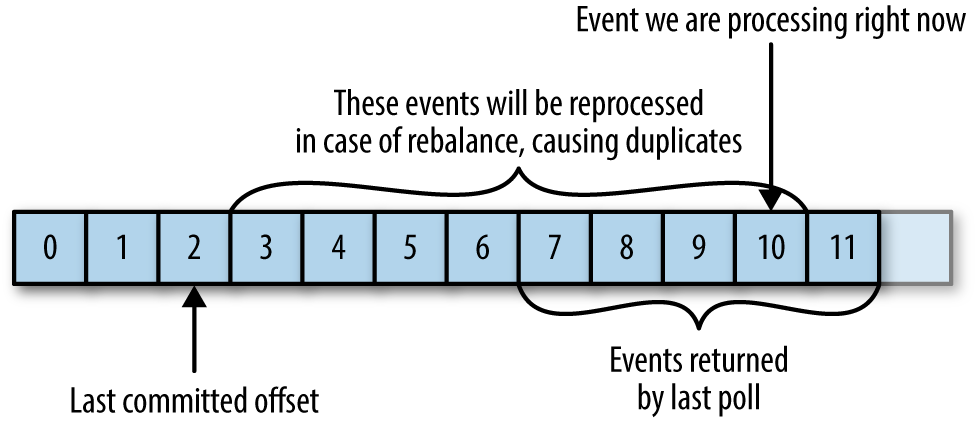

从几个应用案例出发，加深对Kafka Consumer的使用。
本文设计的所有代码详见Github
上手Kafka Consumer是比较容易的，这里以原生的Java API为例，通常的实现逻辑如下所示：
1 2 3 4 5 6 7 8 9 10 11 12 13 14 15 16 17 18 19 20 21 22 23 public void consumer () String brokers = "localhost:9092" ; String group = "group_test" ; String topic = "topic_demo" ; Properties props = new Properties(); props.put("bootstrap.servers" , brokers); props.put("group.id" , group); props.put("enable.auto.commit" , "true" ); props.put("auto.offset.reset" , "latest" ); props.put("key.deserializer" , "org.apache.kafka.common.serialization.StringDeserializer" ); props.put("value.deserializer" , "org.apache.kafka.common.serialization.StringDeserializer" ); KafkaConsumer<String, String> consumer = new KafkaConsumer<>(props); consumer.subscribe(Collections.singletonList(topic)); while (true ) { ConsumerRecords<String, String> records = consumer.poll(100 ); for (ConsumerRecord<String, String> record : records) { System.out.println(record.toString()); } } }
对应的maven依赖为
1 2 3 4 5 <dependency > <groupId > org.apache.kafka</groupId > <artifactId > kafka-clients</artifactId > <version > 1.0.1</version > </dependency >
可以看到通过配置一些参数，并调用poll方法就可以开始消费消息。如果想要了解Consumer的实现原理，当然绕不开阅读poll方法的源码，本篇先抛开poll的实现原理，可以先简单的理解为：调用poll方法可以实现将Client加入到Group中，获取Partition信息，并且拉去对应Partition上的数据。接下来首先会对Consumer的几个主要的参数做以说明，然后通过几个案例来加深对Consumer的使用。在案例的实现过程中涉及到有过Kafka底层的相关知识，若有不清楚的可先阅读Partition & Replication 、Consumer-Group-Coordinator 。
poll()源码的分析可参考poll模型
参数解析 client.id 用来指定当前客户端的标识符名称，不同的客户端API会有与之对应的命名规则；例如原生的Java API中client.id的命名规则是以“consumer-”为前缀，后跟自增长Id；在Kafka-Python中，client.id的命名规则为“kafka-python-” + Kafka-Python版本号。通常是不需要业务代码里显示的指定，但是在特定场景下，可以根据client.id来改变Partition的分配结果，从而实现特殊的需求。
session.timeout.ms 在无心跳时，broker判定Consumer Client存活的最大时间间隔；即就是在此时间范围内，如果客户端不发送心跳，Coordinator也会认为该Client依旧是存活的；一旦超过该时间Coordinator仍未收到心跳，则会判定该Client已经dead，并主动触发Rebalance；默认时长为3000(3s)。
在实际应用中，必须斟酌在真实业务场景中消息处理的实际耗时与session.timeout.ms的大小，否则会出现因为处理超时导致在offset还未提交时Coordinator主动触发了Group的Rebalance，从而造成消息重复消费的情况。
heartbeat.interval.ms Consumer Client向Coordinator发送心跳的频率；默认为session.timeout.ms的三分之一
auto.offset.reset 控制Consumer读取Offset的方式，可选项为latest(default)或earlist；适用场景：
1, 当没有Offset提交记录时(可以理解为加入新的Group)
2, 已存在的Offset失效
对于该参数的使用，通常都只关注了场景1的使用，对于场景2的情况，在特定情况下也是非常有用的，具体可详见下文中有关不停服而修改offset位置案例。
max.poll.records 指定每调用一次poll方法所能拉取到的数据量；这里所指的数据量是消息的条数，即就是执行一次poll方法，返回的ConsumerRecords的size；默认大小为500；最大拉取量是基于当前客户端所有被分配的Partition而言，而不是每个Partition各五百条。
Offset Option Consumer Special Offset 在数据监控中普遍存在这样一种场景：查找出某一天或者某几天内的消息用来进行数据验证或者数据嗅探。基于这种需求来讨论一下如果实现：“从2018-12-31当天产生的第一条消息开始，重新消费Topic(topic_demo)”。
首先获取2018-12-31(1546185600000)当天记录的第一条消息的offset值
1 bin/kafka-run-class.sh kafka.tools.GetOffsetShell --broker-list localhost:9092 --topic <string> --time 1546185600000
为了方便举例，假设Topic只有一个分区。则通过执行如上命令可以得到topic对应的分区0在2018年12月31号这天所记录的第一条消息的offset值(还可以通过代码实现获取offset值，详见Java版 、Python版 )；假设该值等于500，则基于指定Offset进行消费的代码(Java)如下所示
1 2 3 4 5 6 7 8 9 10 11 12 13 14 15 16 17 18 19 20 21 22 23 24 25 26 27 28 29 30 31 32 33 public void consumerSpecialOffset () String brokers = "localhost:9092" ; String topic = "topic_demo" ; String group = "group_test" ; int customPartitionOffset = 500 ; Properties props = new Properties(); props.put("bootstrap.servers" , brokers); props.put("group.id" , group); props.put("enable.auto.commit" , "false" ); props.put("auto.offset.reset" , "latest" ); props.put("key.deserializer" , "org.apache.kafka.common.serialization.StringDeserializer" ); props.put("value.deserializer" , "org.apache.kafka.common.serialization.StringDeserializer" ); KafkaConsumer<String, String> consumer = new KafkaConsumer<>(props); consumer.subscribe(Collections.singletonList(topic)); consumer.poll(0 ); consumer.assignment().forEach(topicPartition -> consumer.seek(topicPartition, customPartitionOffset)); while (true ) { ConsumerRecords<String, String> records = consumer.poll(100 ); for (ConsumerRecord<String, String> record : records) { System.out.println(record.toString()); } } }
因为这里只是数据的嗅探测试，并不想改变Broker端存储的Offset信息，所以这里指定enable.auto.commit为false；只消费不提交；当然如果是在生产环境中，为了尽可能的避免或者减少对线上服务的印象，可以优先考虑指定一个新的Group，这样就可以避免因为新增Consumer而导致的Rebalance操作。通过KafkaConsumer.seek()方法来改变和指定当前Consumer的Offset位置，这种操作不会影响到其他Client，且仅对本次有效。
如果要想实现获取指定时间窗的消息，其实也简单；实现的方法也很多，这里简单介绍两种
方法一：通过Offset来获取时间窗内的数据
分别获取时间窗前后的Offset临界值，然后通过对ConsumerRecord中的Offset值进行判断从而筛选数据
方法二：通过时间戳来获取指定时间窗内的数据
直接通过对比ConsumerRecord中的timestamp和目标时间窗来实现数据的筛选
Commit Special Offset 在不触发Rebalance的前提下 修改Broker端存储的Offset值
1 2 3 4 5 6 7 8 9 10 11 12 13 14 15 16 17 18 19 20 21 22 23 public void commitSpecialOffset () String brokers = "localhost:9092" ; String group = "group_test" ; String topic = "topic_demo" ; Properties props = new Properties(); props.put("bootstrap.servers" , brokers); props.put("group.id" , group); props.put("enable.auto.commit" , "true" ); props.put("auto.offset.reset" , "latest" ); props.put("key.deserializer" , "org.apache.kafka.common.serialization.StringDeserializer" ); props.put("value.deserializer" , "org.apache.kafka.common.serialization.StringDeserializer" ); KafkaConsumer<String, String> consumer = new KafkaConsumer<>(props); List<PartitionInfo> partitionInfos = consumer.partitionsFor(topic); int resetOffsetValue = 10 ; partitionInfos.forEach(partitionInfo -> currentOffsets.put(new TopicPartition(partitionInfo.topic(), partitionInfo.partition()), new OffsetAndMetadata(resetOffsetValue))); consumer.commitSync(currentOffsets); }
上述例子的应用场景比较局限，仅限于指定Group下Partition未被其他Client所占用的时候才可以修改；但是在实际的应用场景中，很有可能存在这种场景：因为脏数据需要修改Offset的位置，但是又不能停止服务。
例如Group(group_test)下的Topic(topic_demo)只有一个Partition，正在被服务A所占用；分区topic_demo-0的有效offset范围为100 ~ 1000；且从500处开始一直到1000，所有的消息均是脏数据，现在需要在不停服的前提下，将Offset的位置改变成最新状态。
要实现不停服更新Offset ，就需要了解Consumer Rebalance和Partition Assignment；这里简单阐述一下(有关Rebalance的相关知识、分区分区策略的原理详见Consumer-Group-Coordinator )：
Rebalance：Rebalance是基于Group而言的，一个Group中Consumer个数的变化会触发Rebalance；Group在Rebalance期间对外表现为不可用；没经过一次Rebalance，都会按照客户端的分区分配策略来分发客户端将要处理的Partition。
分区分配策略：Kafka的分区分配策略是用Consumer来决定的，默认的分区分配原则为RangeAssignor，即就是对于每个被订阅的Topic，尽可能将连续的Partition分给同一个Consumer Client。分配算法如下所示：
1，将Consumer Client按照命名排序
2，计算平均每个Consumer可以分到的Partition个数 => n / m
3，计算平均分配后剩余的Partition个数 => n % m
4，如果n%m等于零，则代表所有客户端可以一次平均分配到n/m个Partition；如果n%m大于零，则前n%m个Consumer分配到(n / m + 1)个Partition，剩下的Consumer(m - n % m)分配(n / m)个Partition
结合上述两点就可以很容易实现不停服更新Offset的需求：即就是只要保证我的Offset更新服务B的client.id在排序上位于服务A的client.id，这样就可以保证在Rebalance之后一定能分配到该Partition，从而来执行Offset的更新操作(Offset的更新可以分为两种：直接将Offset指定为最大值；或者将Offset设定为一个无效值；这里采用第二种方案，因为Partition的有效Offset范围为100 ~ 1000，所以将Offset设置为10，则会因为auto.offset.reset=true的配置自动将Offset重新设置为latest)；当更新完成并安全退出后，再次触发Rebalance，此时Group中只剩下服务A，当服务A再次获取到当前Partition时，根据服务A的配置 auto.offset.reset=true，就可以保证此时的Offset为最新位置。
1 2 3 4 5 6 7 8 9 10 11 12 13 14 15 16 17 18 19 20 21 22 23 24 25 26 27 28 29 30 public static void main (String[] args) String brokers = "localhost:9092" ; String group = "group_test" ; String topic = "topic_demo" ; Properties props = new Properties(); String clientId = "aaa" ; props.put("client.id" , clientId); props.put("bootstrap.servers" , brokers); props.put("group.id" , group); props.put("enable.auto.commit" , "true" ); props.put("auto.offset.reset" , "latest" ); props.put("key.deserializer" , "org.apache.kafka.common.serialization.StringDeserializer" ); props.put("value.deserializer" , "org.apache.kafka.common.serialization.StringDeserializer" ); KafkaConsumer<String, String> consumer = new KafkaConsumer<>(props); consumer.subscribe(Collections.singletonList(topic)); consumer.poll(0 ); List<PartitionInfo> partitionInfos = consumer.partitionsFor(topic); int resetOffsetValue = 10 ; partitionInfos.forEach(partitionInfo -> currentOffsets .put(new TopicPartition(partitionInfo.topic(), partitionInfo.partition()), new OffsetAndMetadata(resetOffsetValue))); consumer.commitSync(currentOffsets); }
因为由Rebalance造成的服务不可用时间通常都比较短，且远小于停服重启所带来的影响；假设由Rebalance造成的不可用时长是可以接受的，这样就可以基于上述方案实现Offset的修改。
Consumer Rebalance Listener Rebalance的设计很好的提升了Kafka的容错率和可扩展性；但并非所有的Rebalance都是我们期望的。在介绍Consumer参数时有说到一个参数session.timeout.ms，在session.timeout.ms内没有发送心跳就会触发Rebalance。在实际应用中，造成心跳未按时发送的原因很多，网络、消息处理延迟等等，并不是所有的未发送我们都期望进行Rebalance，那么该如何消除这种情况呢？增大session.timeout.ms的时间区间是一个很直接办法，但并不是一个有效的办法，因为时间区间的界定是个难度比较大的问题。太小还是容易触发Rebalance，但是太大肯定是不合理。所以在这里介绍一种：通过客户端监听Rebalance行为来自定义控制Offset、告警，从而解决非正常Rebalance导致的消息重复问题，也可以快速感知到问题的发生。
例如有如下场景，当一次性拉取多条数据，且在数据处理未完全处理完时，发生Rebalance导致新分配的Client基于从原始的消息位置开始消费，从而导致数据的重复消费问题

图片来自Kafka权威指南 Chapter 4/Commits and Offset
要解决该问题，可以通过监听Consumer的Rebalance行为，在发生前将该处理的操作及时的处理完，样例代码如下所示，每次Rebalance前打印当前的Offset信息
1 2 3 4 5 6 7 8 9 10 11 12 13 14 15 16 17 18 19 20 21 22 23 24 25 26 27 28 29 30 31 32 33 34 35 36 37 38 39 40 41 42 43 44 45 46 47 48 49 50 51 52 53 54 private static Map<TopicPartition, OffsetAndMetadata> currentOffsets = new HashMap<>();private static String brokers = "localhost:9092" ;private static String group = "group_test" ;private static String topic = "topic_demo" ;private static KafkaConsumer<String, String> consumer;static { Properties props = new Properties(); props.put("bootstrap.servers" , brokers); props.put("group.id" , group); props.put("enable.auto.commit" , "true" ); props.put("auto.commit.interval.ms" , "1000" ); props.put("key.deserializer" , "org.apache.kafka.common.serialization.StringDeserializer" ); props.put("value.deserializer" , "org.apache.kafka.common.serialization.StringDeserializer" ); consumer = new KafkaConsumer<>(props); } private class CustomHandleRebalance implements ConsumerRebalanceListener @Override public void onPartitionsRevoked (Collection<TopicPartition> collection) System.out.println(String.format( "Before Rebalance, Assignment partitions is: %s; Current each partition's latest offset is: %s" , collection.toString(), currentOffsets.toString())); } @Override public void onPartitionsAssigned (Collection<TopicPartition> collection) System.out.println(String.format( "After Rebalance, Assignment partitions is: %s; Current each partition's latest offset is: %s" , collection.toString(), currentOffsets.toString())); } } private void consumer () try { consumer.subscribe(Collections.singletonList(topic), new CustomHandleRebalance()); while (true ) { ConsumerRecords<String, String> records = consumer.poll(100 ); for (ConsumerRecord<String, String> record : records) { currentOffsets.put(new TopicPartition(record.topic(), record.partition()), new OffsetAndMetadata( record.offset())); System.out.println("Processing msg : " + record.toString()); } } } catch (Exception e) { System.out.println("Unexpected error: " + e.getMessage()); } finally { consumer.commitSync(currentOffsets); } }